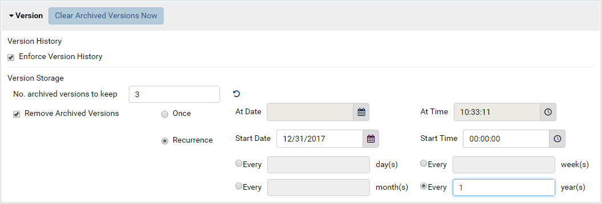

System Configuration/Report¶
The System Configuration/Report page allows user to:
- configure Report Version History feature
- set a default background image for report header, for each tenant.
- customize the names for “Global Categories” and “Local Categories” in a multi-tenant system (see Global Report Setup Guide).
Configure Report Version History¶
- In browser, log in to Izenda as a user with System Configuration permission.
- The Setting Level must be System.
Untick the Enforce Version History check-box will disable Report Version and remove all version history.
Change the maximum number of versions per report in “No. archived versions to keep” box.
Note
The existing report versions that exceed this number are not removed. Setting this number only limits future report versions.
Click the Clear Archived Versions Now button at the top will remove all current version history but still keep tracking versions.
To use a schedule to remove all current version history, tick the Remove Archived Versions check-box then set up the time and recurrence.

{kind=link}
Fig. 127 Report Version History Configuration
Set Default Header Image¶
- In browser, log in to Izenda as a user with System Configuration permission.
- Click Settings, then System Configuration then Report in the left menu.
- Select the Setting Level: either System or a specific tenant.
- In Default Header Image section, enter a relative path or the full url to the image.
- Sample relative path in web server box:
/images/contoso.png - Sample full url:
http://image.google.com/contoso.png
- Sample relative path in web server box:
- Click Save button at the top.
{kind=link}